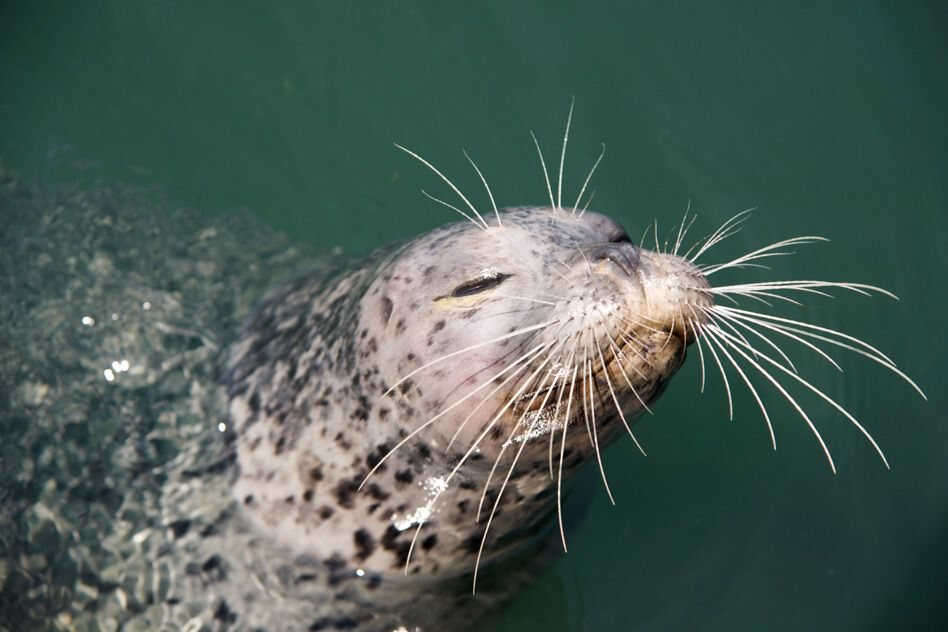
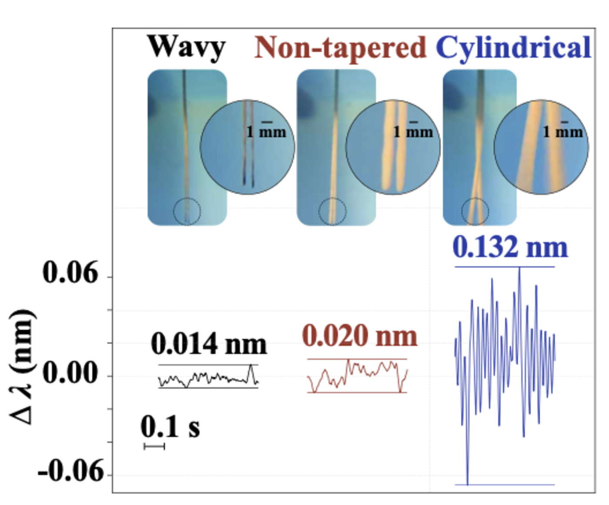

A whisker that reads the wake a fish leaves behind.
Not my project to lead. A Stanford BDML project with Shanghai Jiao Tong and Tsinghua; I am one of ten authors. My part was the experimental platform, the signal-processing pipeline and the underwater field testing.
What the harbor seal already does.
A harbor seal finds moving prey in water it cannot see through. It reads the trail of disturbed water the prey left behind — and that trail stays legible for ten seconds or more after the animal has gone.
The morphology is why it works. A plain cylinder in a flow sheds its own vortices and shakes itself. The seal’s vibrissa is tapered, elliptical and undulating, which shifts the shedding out of phase along the shaft and kills that self-noise.

Two fiber Bragg gratings inside a cast whisker.
The shaft copies the vibrissa geometry. The readout is optical, so nothing electrical meets seawater and several whiskers can share one fiber.
The 100 mm shaft is a superelastic NiTi wire, 0.4 mm across, overmolded in urethane. That pairing is what makes it survive a robot: 500 indentation cycles left the response unchanged, and after being bent past 90° underwater it returned to within 5% of baseline in under a second.

The shape earns its keep
Tow a plain cylinder through water and it sheds vortices off alternating sides, so it shakes itself. Whatever it reports is mostly its own vibration. Tow the seal-shaped shaft — tapered, elliptical, undulating — and that shedding is thrown out of phase along its length, so the shaking largely cancels.
Same water, same speed; the trace simply goes quiet. That quiet is the whole point. A whisker that is not drowning in its own noise has room left to report the water around it.
A trail that is still there after the source has gone.
Most whisker studies wave a cylinder in front of the sensor. That proves it responds to unsteady flow, but it is not the same problem as reading what a moving animal left behind.
Straight, or turn? Decided from the water alone.
A whisker on the nose of a small ROV, nothing else pointed at the flow. The foil goes ahead and takes one of two paths; seconds later the robot reaches the fork and has to pick the same one.
A logistic-regression classifier reads the two FBG channels and nothing else. The vehicle is tracked optically, but that drives the motion controller only; it never reaches the decision. Turning runs build a stronger oscillation late in the window, and that is what the classifier keys on.
One whisker is not enough.
One whisker returns one channel about a flow that has direction, structure and a source upstream. Enough for a two-way choice. Not enough to say where the flow came from, or whether a signal was water or contact.
Because the readout is optical, several whiskers can share one fiber, so added sensing points cost almost nothing in wiring or hull penetrations. Several reading the same water at known positions should recover flow direction, vortex location and wake geometry.
Should is the honest word. The paper’s own next steps are multi-whisker arrays, more realistic source kinematics, background currents, and motion that is not confined to a plane.
- H. Li, T. Tu, S. Yao, Z. Chang, J. Jung, X. Xie, L. Y. Chung, T.-A. Ren, G. Chen, and M. Cutkosky, “Fiber Bragg Grating Whiskers for Bioinspired Hydrodynamic Perception on Underwater Robots,” arXiv:2608.24724, 2026. Submitted to IEEE Transactions on Robotics.